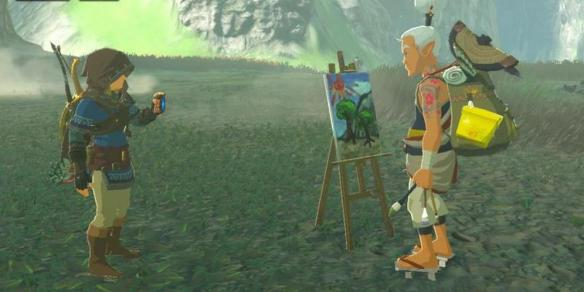
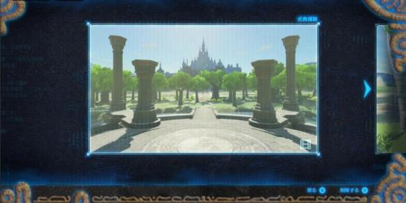
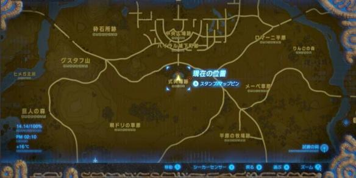
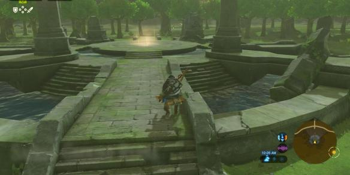
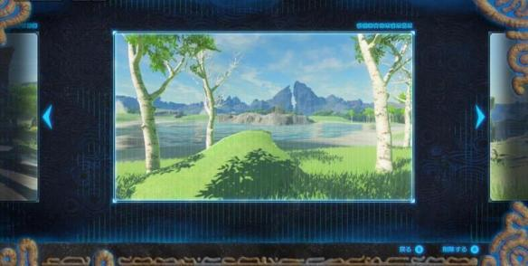
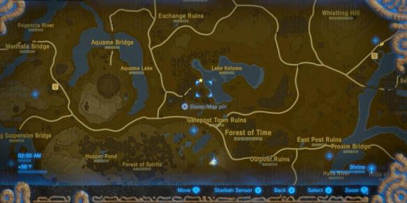
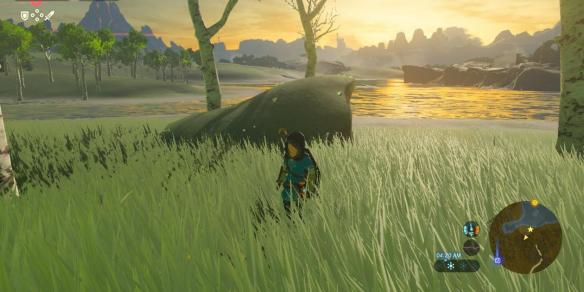

【照片里的记忆】Captured Memories / ウツシエの記憶
在开启西卡石板的照相、图鉴功能后，我们就获得了12张关于过去和塞尔达的记忆的照片。
找到这些照片中的位置，就能让林克想起一段当年的记忆。
当你找齐所有的照片，在游戏结束后能额外看到一段影像。
寻找照片的线索，主要来自下图中这位画匠爷爷，他会出现在各地的马厩、城镇。和他对话，给他看照片，就能获悉照片的地址。
回忆所在位置会发光，靠近时就能发现。

下面是所有照片的对应位置：
第1张
在海拉尔城外的仪式场地，被一圈森林包围。



第2张
从初始的台地下来，往北走一段就能到。



